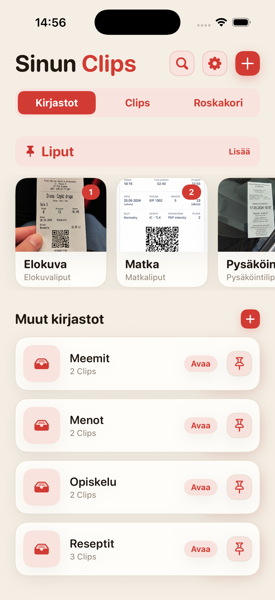
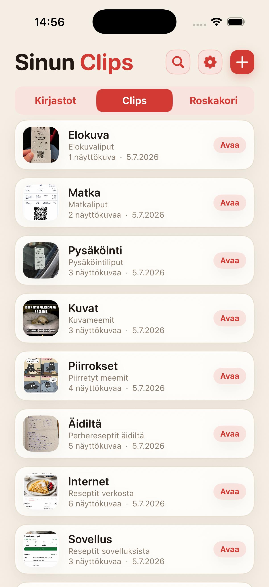
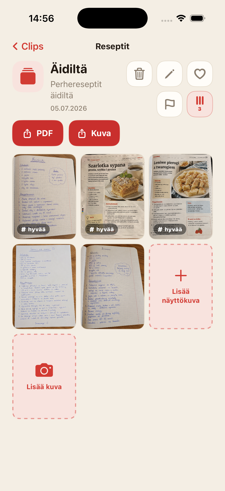
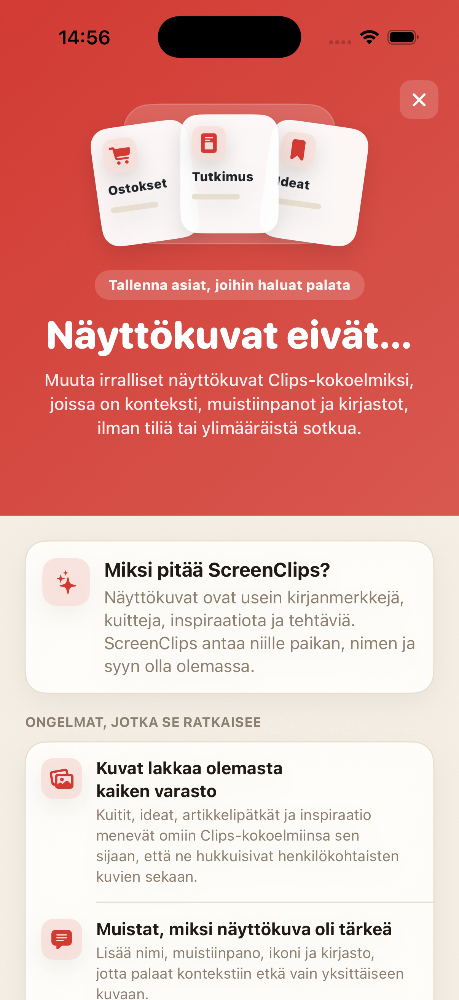

Kuvakaappaus hukkuu virtaan
Tallennat jotain tärkeää, ja viikon päästä selaat Kuvia kuin vanhaa mappia.
Muuta irralliset kuvakaappaukset Clipeiksi, joilla on nimi, muistiinpano ja oma kirjasto. Ei tiliä, ei pilveä eikä päivittäistä metsästystä kamerarullassa.

Kuitit, reseptit, liput, ideat ja artikkelipoiminnat päätyvät selfien, meemien ja vahinkokuvien väliin. Pilvitallennus on olemassa, mutta viime viikon hotelliosoite voi silti olla kadoksissa.
Tallennat jotain tärkeää, ja viikon päästä selaat Kuvia kuin vanhaa mappia.
Pelkkä kuva ei usein riitä. ScreenClips antaa lisätä nimen ja muistiinpanon.
Ostokset, työ, matkat ja opiskelu ansaitsevat omat paikkansa, eivät yhtä isoa kasaa Kuvissa.
Kokoa reseptit, kuitit, liput, taustatyö, opiskelumuistiinpanot tai mikä tahansa, jonka haluat löytää myöhemmin.
Clip kokoaa yhden asian ympärillä olevat kuvat. Sillä on nimi, kuvaus ja omat kuvakaappaukset.
Avaa kirjasto, valitse Clip ja jatka siitä, mihin jäit. Ei pitkää retkeä kamerarullan läpi.

ScreenClips ei yritä arvata kaikkea puolestasi. Se antaa yksinkertaisen rakenteen: kirjasto aiheelle, Clip asialle, kuvakaappaukset ja kuvat sisälle.
Kokoa sisältö Clipeihin ja täydennä sitä, kun aihe kasvaa.
Kun Clip pitää lähettää tai tallentaa sovelluksen ulkopuolelle, siitä syntyy siisti tiedosto.
Siellä missä ennen oli vain selaamista ja huokailua, saat suosikit, liput ja järjestyksen.

ScreenClips toimii paikallisesti. Sinun ei tarvitse luoda tiliä tai antaa kuitteja, muistiinpanoja ja suunnitelmia jälleen yhdelle palvelulle vain saadaksesi järjestyksen.
Premium ei tee sovelluksesta monimutkaisempaa. Se antaa vain enemmän tilaa kirjastoille, Clipeille ja kuvakaappauksille. Hinta näkyy App Storessa.
LataaApp Storesta
Ei. Kun poistat kuvan Clipistä, alkuperäinen jää Kuviin.
Kyllä. ScreenClips on tehty paikalliseksi järjestäjäksi iPhonessa.
Ei. ScreenClips ei vaadi tiliä Clipien järjestämiseen.
Kyllä. Kun ne kuuluvat samaan Clipiin, voit lisätä sekä kuvakaappauksia että kuvia.
ScreenClips järjestää asiat, jotka tallensit "myöhemmin". Tällä kertaa "myöhemmin" on oikeasti löydettävissä.
LataaApp Storesta